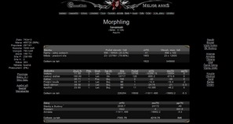
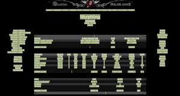
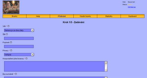
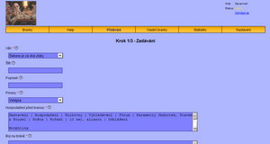
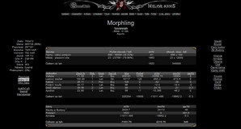
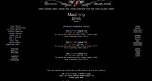
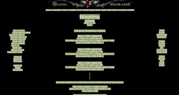
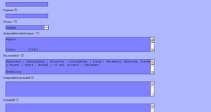
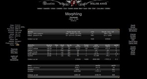
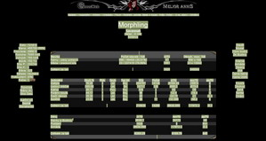

Co dìlat když jdete na bránu a chcete jí mít na archivu?
1. než jdete na branku, otevøete si hospodaøení

2. oznaète celou stránku (ctrl+a) a dejte kopírovat

3. v novém oknì si otevøete archiváøe -> pøidávání

4. a do políèka Hopodaøení Pøed Branou vložte to, co jste si oznaèili v bodì 2.

5. poté kliknìte na útok na bránu

6. až si nastavíte co posíláte do boje, ukáže se vám samotná stránka boje

7. tu oznaète (ctrl+a) a dejte kopírovat

8. a vložte do Archiváøe do políèka Boj na Bránì

9. po boji si opìt otevøete hospodaøení

10. celé oznaète (ctrl+a) a dejte kopírovat

11. a vložte do Archiváøe do pole Hospodaøení Po Bránì

12. pak už jen dovyplòte pøípadnì dálší pole a kliknìte na pokraèovat, zkontrolujte v 2. kroku správnost údajù a poté vložte do databáze (dalším kliknutím na "pokraèovat")
13. pozn. toto je JEDINÝ možný postup! (resp. lze to vložit ještì pokud jste si pøesnì tyhle stránky poukládali, ale tušim že Firefox a IE mají s tim ukládáním problémy) Pokud se budete pokoušet tam dát výpis z pošty, tak vás systém odmítne!